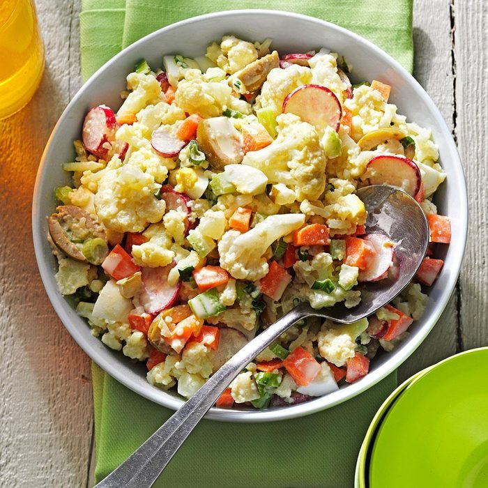

Faux-tato Salad

Description
Cauliflower in potato salad? You bet, along with carrots, olives and other yummy surprises.
Ingredients
- 1 medium head Cauliflower
- medium carrot, chopped
- 2 hard-boiled large eggs, chopped
- 4 green onions, chopped
- 1 celery rib, chopped
- 1/4 cup pitted green olives, halved lengthwise
- 1/4 cup thinly sliced radishes
- 1/4 cup chopped dill pickle
- 1/4 cup fat-free mayonnaise
- 1 tablespoon Dijon mustard
- 1/4 tablespoon salt
- 1/8 tablespoon pepper
Steps
- In a large saucepan, bring 1 in. of water to a boil. Add cauliflower florets;
cook, covered, 4-7 minutes or until crisp-tender. Drain and rinse in cold water.
Pat dry and place in a large bowl. Add carrot, eggs, green onions, celery, olives,
radishes and pickle.
- In a small bowl, mix the remaining ingredients. Add to cauliflower mixture;
toss to coat. Refrigerate until serving.